Music
Beaver plays a musical piece with several instruments.
Place the instruments in front of Beaver so that he can play them.
To get all the points, use only moves. Be careful about which instruments you replace!
In this version, you can grab in a single move, two instruments that are next to eachother. To do this, drag one of the instruments towards one of the instruments next to it, before dropping them in front of Beaver.
 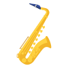
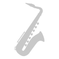
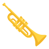
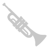
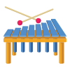
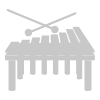
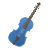
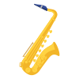
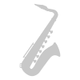
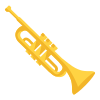
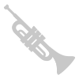
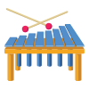
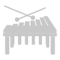
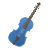